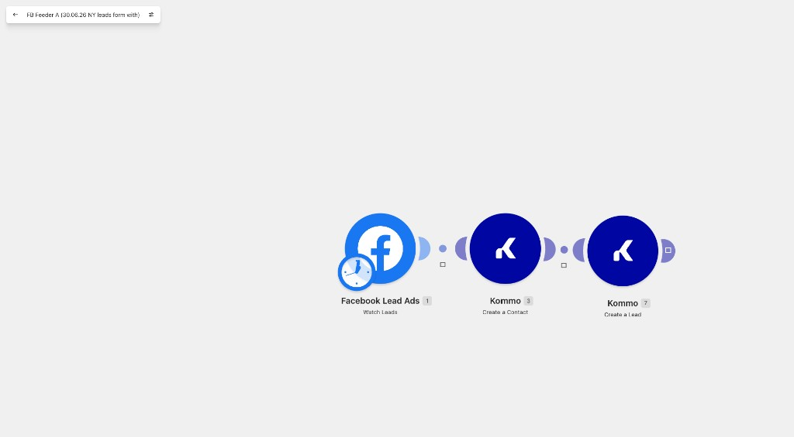
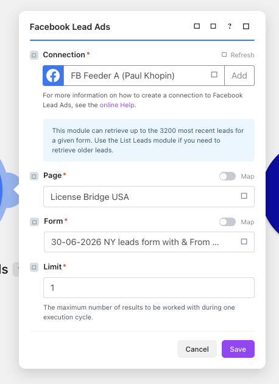
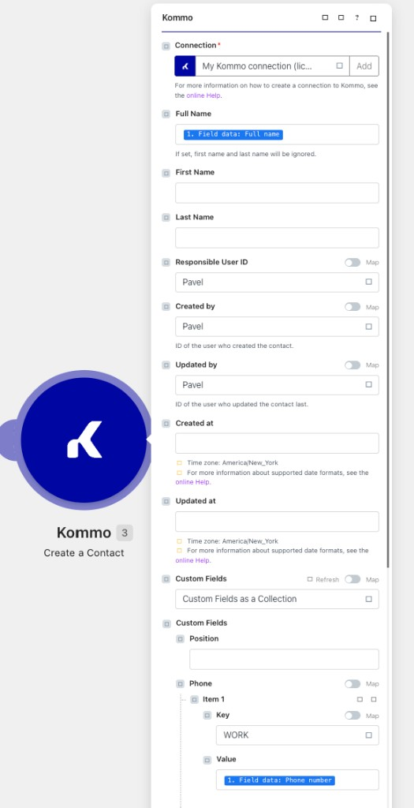
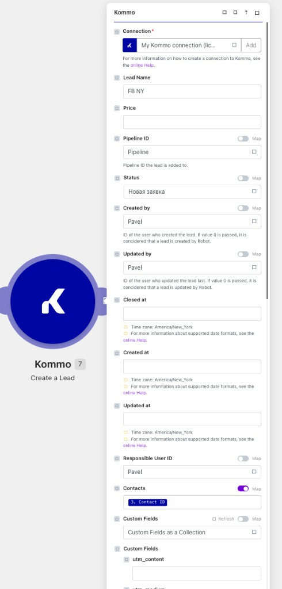
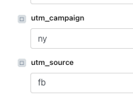
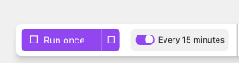

Новая форма Facebook в Kommo
Пошаговая инструкция: как добавить сценарий в Make, чтобы заявки с формы Facebook Lead Ads автоматически создавали контакт и сделку в Kommo.
Как устроена система
Один сценарий = одна форма Facebook
Каждый сценарий в Make состоит из трёх модулей. Заявка проходит по цепочке слева направо: Facebook отдаёт лид → Kommo создаёт контакт → Kommo создаёт сделку и привязывает её к контакту.
Watch Leads
Create a Contact
Create a Lead

FB Feeder A (L B USA 30-06-2026 NY leads form with …).Шаг 1. Создать сценарий
Make → Scenarios
- Facebook Lead Ads → Watch Leads
- Kommo → Create a Contact
- Kommo → Create a Lead
Шаг 2. Facebook Lead Ads — Watch Leads
Первый модуль — триггер
Этот модуль следит за новыми заявками с выбранной формы Facebook и передаёт их дальше по цепочке.
| Поле | Значение |
|---|---|
| Connection | FB Feeder A (Paul Khopin) |
| Page | License Bridge USA |
| Form | Конкретная форма, которую подключаешь (например 30-06-2026 NY leads form with & From …) |
| Limit | 1 — обязательно |

Шаг 3. Kommo — Create a Contact
Второй модуль — создание контакта
По каждой заявке создаётся контакт в Kommo. Данные берутся из блока Facebook Lead Ads.
| Поле | Значение |
|---|---|
| Connection | My Kommo connection (licensebridgeusa…) |
| Full Name | Из Facebook: 1. Field data: Full name |
| Responsible User ID | Pavel |
| Created by | Pavel |
| Updated by | Pavel |
| Custom Fields → Phone | Key: WORK · Value: 1. Field data: Phone number |

Шаг 4. Kommo — Create a Lead
Третий модуль — создание сделки
Сделка создаётся на этапе «Новая заявка» и связывается с контактом из предыдущего шага.
| Поле | Значение |
|---|---|
| Lead Name | FB NY или FB CA — в зависимости от региона формы |
| Pipeline ID | Pipeline |
| Status | Новая заявка |
| Created by | Pavel |
| Updated by | Pavel |
| Responsible User ID | Pavel |
| Contacts | Map ON → 3. Contact ID (из Create a Contact) |
| Custom Fields | Custom Fields as a Collection |
| utm_source | fb |
| utm_campaign | ny или ca — по региону формы |


Шаг 5. Тест и включение расписания
Run once → Every 15 minutes

Именование сценария
Чтобы не путать формы
Название должно сразу показывать: через какой аккаунт подключено, какая страница и какая форма.
FB Feeder A (L B USA название формы)
| Часть | Значение |
|---|---|
| FB Feeder A | Аккаунт Павла (Feeder A), через который подключена форма |
| (L B USA …) | В скобках: код страницы L B USA (License Bridge USA) и далее — точное название формы из Facebook |
Пример: FB Feeder A (L B USA 30-06-2026 NY leads form with …)
Типовые проблемы
| Симптом | Что проверить |
|---|---|
| Красный модуль Facebook | Страница не выбрана в Business Integrations → Make. Connection = FB Feeder A. |
| Ошибка при нескольких лидах | Limit в Watch Leads должен быть 1. |
| Сделка без контакта | В Create a Lead поле Contacts → Map ON → Contact ID из шага 3. |
| Неверный регион в UTM | utm_campaign: ny для Нью-Йорка, ca для Калифорнии. |
| Сценарий не запускается | После теста включи переключатель ON и расписание Every 15 minutes. |